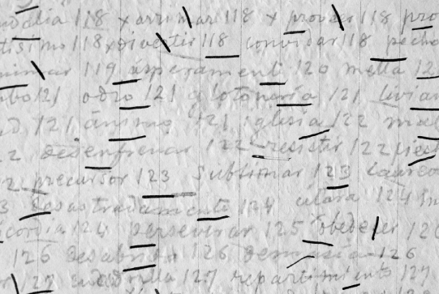

Palacio, Obdulio. Nació en Santa Rosa de Osos en 1875, se doctoró en Derecho en 1900. Fue un curioso investigador como el señor Suárez. Sostuvo correspondencia con Cuervo aunque solo se conserva una carta de Palacio en el Archivo, que cuenta con cuatro de Cuervo. Perteneció a la Academia Colombiana de la lengua. En carta a Palacio, a propósito de las Apuntaciones Cuervo le comenta: “Cuando redacté por primera vez esos apuntes, era muy joven, era maestro, lleno de fe en las reglas y en mis maestros; la violación de las unas y la irreverencia para con los otros me sacaban de mis casillas, de modo que en todo el libro se trasparenta la férula del pedagogo, y sepa usted que yo la tenía propia, para que los alumnos no saliesen con que se había perdido la del colegio”[1].
Páramo Pomareda, Jorge. Según su hijo Aquiles Páramo “Mi padre fue un hombre polifacético, fue lingüista y un gran políglota, pero su pasión principal estuvo en el mundo helénico. Aprendió el griego clásico desde muy joven y lo dominó casi a la perfección, incluyendo sus numerosos dialectos y sus diversas escrituras. Publicó varios trabajos sobre filología griega”. En nuestro recuento sobre Cuervo nos interesa destacar que fue investigador auxiliar del departamento de Lexicografía aplicado a la continuación del Diccionario de Cuervo. Editó el primer tomo del Archivo epistolar colombiano: “Epistolario de Rufino José Cuervo y Emilio Teza”. Siendo jefe del departamento de Filología clásica editó la Gramática latina de M. A. Caro y R. J. Cuervo en 1972. Dirigió el departamento de Lingüística encargado de redactar el fascículo 11 del tomo iii del dcr.
Pérez, Santiago. Nació en Zipaquirá, el 23 de mayo de 1830. Junto con sus hermanos Felipe y Rafael, fundó y dirigió una de las más importantes instituciones educativas de la capital de la República: “El Colegio de Pérez Hermanos”. Allí recibió R. J. Cuervo una sólida instrucción y, al parecer, tuvo por maestro al doctor Lorenzo Lleras, lo mismo que a otros profesores como el presbítero Benigno Perilla, a J. M. Vergara y Vergara, y a Manuel Ancízar, amigo de don Andrés Bello y divulgador de su gramática[2]. Posteriormente Cuervo fue profesor de esta institución, pero su labor profesoral fue interrumpida por el cierre de esta institución. A Pérez se le conoce como un educador de gran severidad, pero de gran consagración. Fue escritor, poeta, orador, periodista, educador, gramático, diplomático, estadista y periodista. Escaló los más altos cargos públicos: secretario de estado, miembro del parlamento, diputado, embajador ante los Estados Unidos y rector de la Universidad Nacional. Tomó parte en la revolución encabezada en 1860 por el general Tomás Cipriano de Mosquera contra el gobierno conservador. En 1874 fue elegido presidente de la República. Fue miembro fundador de la Academia Colombiana de la Lengua. Durante la administración de M. A. Caro, lideró desde su periódico El Relator una dura crítica a dicho mandato lo que le trajo como consecuencia su destierro en 1895, por este motivo viajó a París en donde murió el 5 de agosto de 1900. En el año de 1952 sus restos fueron repatriados y descansan en el cementerio central de Bogotá.
Período bogotano. Todos los principales escritos de Cuervo, por lo menos en su estado embrionario o en el de preparación de materiales, nacieron en el período bogotano, lo cual significa que este es el período más fecundo de su vida, al par que el más agitado, hasta por el aspecto material; y que, desde entonces, el sabio colombiano dominaba ya los capítulos esenciales de la ciencia y había aprendido a mirar lejos y con amplitud de visión. Rivas Sacconi resume así: “En la casa de la Candelaria ve el primer sol; ella es teatro de su infancia; en ella se prodiga con la mente y con la mano; de ella sale para regentar sus cátedras y, un buen día, para emprender un viaje sin retorno, más allá del océano”[3].
Período parisino. Las páginas trazadas en el tiempo escandido por el rumor de las aguas del Sena, reflejan madurez, claridad, maestría. Por consiguiente, el período parisino es el de la consolidación, depuración y universalización del genio de Cuervo. Rivas Sacconi nos comenta: “El tránsito de la casona solariega al acogedor departamento parisiense representa la universalización del genio de Cuervo, que empieza a pertenecer al mundo entero. A la nueva residencia llega con los bríos de su envidiable madurez y con un bagaje de libros y apuntes; en ella reúne y cuida una preciosa biblioteca; estudia, consulta, redacta, corrige, discute, repasa; allí dicta su testamento; de allí parte para sus pesquisas en las bibliotecas públicas, para sus excursiones bibliófilas, para su misa y, una mañana de julio, para el cementerio del Père Lachaise”[4].
Piñeyro, Enrique. Este ilustre escritor y crítico cubano nació en La Habana el 19 de diciembre de 1839 y murió en París el 11 de abril de 1911. Compartió con Cuervo una respetuosa y fraternal amistad que se puede apreciar en la correspondencia que sostuvo a partir de 1885, donde Piñeyro agradece el obsequio del Prospecto del Diccionario de Cuervo. En la Revista Cubana del 30 de noviembre de 1887, Piñeyro hizo una elogiosa reseña del primer tomo del Diccionario de construcción y régimen, en la que decía: “Es, como su título lo indica, un repertorio de sintaxis, el estudio minucioso de todas las particularidades que componen la trama del lenguaje escrito o hablado, el enlace de las palabras y oraciones”. El libro El romanticismo en España de Piñeyro, editado en París, en 1904, está dedicado a Cuervo. En la Introducción señala: “Faltame, por último decir que, al inscribir en la primera página el nombre de mi amigo el señor R. J. Cuervo, me han movido igualmente la amistad y la gratitud; a la amenidad de su trato, a su gran saber, a su instructiva conversación, a su biblioteca, más rica que la mía en libros españoles, debo mucho de lo que en este libro se encuentra”[5].
Pombo, Rafael. Bogotano de familia payanesa, miembro de la Academia Colombiana de la Lengua y secretario perpetuo de la misma. Gran amigo y vecino de los hermanos Ángel y Rufino José Cuervo, con quienes mantuvo nutrida correspondencia intercambiando temas de índole profesional y familiar. Ángel Cuervo consideraba que “en Pombo están las facultades poéticas de tal manera fundidas y compenetradas con la vida moral, que en todos sus actos es difícil separar lo que corresponde al amor de lo bello de lo que corresponde al amor de lo bueno”, y en el trato “Es Pombo incomparable en la amistad, y quien se atreva a ultrajar a un amigo suyo, hallará de seguro en él más ardorosa defensa que la que pudiera hacer el mismo agraviado; y cuenta que Pombo jamás ha sido enemigo de nadie ni guardado rencor contra persona alguna: en su corazón no hay una gota de hiel”[6]. Recordado sobre todo por su contribución a la literatura infantil. Contratado por la editorial D. Appleton & Company en Nueva York, para traducir al español canciones de cuna de la tradición oral anglo-sajona. Premiado en una ceremonia de coronación como Poeta Nacional de Colombia en un homenaje que se le tributó en el Teatro Colón de Bogotá el día 20 de agosto de 1905, por lo que recibe carta de felicitación de Don Rufino José[7].
Poeta. “¿Qué tal si me diera por hacer versos?” oímos decir a Rufino José en diálogo con Teza. Y le dio. Dos poesías de Cuervo vieron la luz pública: ¡O Clemens, O Pía! (1872) y La estrella matutina, también de tema mariano, (1873). En el Archivo de Cuervo se encuentran otras cinco poesías, con numerosas correcciones, las identificamos por sus primeros versos, ya que carecen de título original: Veis allá sobre las nubes, A este mundo viene el hombre, Feliz encuentro, De planta generosa y un epitalamio para los novios chilenos Antonio E. Varas e Isabel Montt. A. Gómez Restrepo decía que R. J. Cuervo “era poeta por el sentimiento, y no desconocía la técnica del arte, pues también a semejanza de Littré, tomó más de una vez la lira en sus manos, aunque la pulsó con timidez”[8]. M. G. Romero anota sobre el trabajo poético de Cuervo: “Y una observación: en estos borradores se puede ver el cuidado del autor por mejorar el verso. Son numerosas las variantes, los versos que tacha, los epítetos que cambia”[9].
Porto Dapena, José‑Álvaro. Profesor adjunto a la Cátedra Antonio de Nebrija. Se trasladó a Bogotá con dos objetivos básicos: la redacción de los fascículos del Diccionario y el adiestramiento del equipo de investigadores que por ese entonces estaba conformado por Antonio Forero Otero, Humberto Grimaldo Sánchez, Jesús Bohórquez, Josefina Torres, Edilberto Cruz Espejo y Aquiles Páramo. Durante la etapa comprendida entre junio de 1973 hasta junio de 1976 con la redacción de Porto Dapena salieron de la Imprenta Patriótica los fascículos 4 al 10 (encallecer-envidiar) que sumaron 144 monografías. A partir de 1980 se volvió a vincular al Departamento de Lexicografía, y se encargó de la redacción de los fascículos 12 al 21 (escapar-extremo) con 137 monografías que conforman un subtotal de 281 de las 382 que contiene el tomo iii. Escribió el texto Elementos de lexicografía. El Diccionario de construcción y régimen de R. J. Cuervo.
Pott, August Friedrich. A manos de August Friedrich Pott, profesor extraordinario de Lingüística General en la Universidad de Halle y uno de los nombres más emblemáticos en la historia temprana de la lingüística, llegaría, por intermedio de Ezequiel Uricoechea, un ejemplar de la segunda edición de las Apuntaciones críticas sobre el lenguaje bogotano, de las cuales Pott publicaría una generosa reseña en los Göttingische gelehrte Anzeige en 1877. Cuervo, por su parte, recibiría una carta de Pott agradeciendo el envío y se entrevistaría con él durante su viaje a Europa. La breve pero elogiosa reseña, la mencionada carta y la conversación con el profesor de Halle tendrían, en el largo plazo, un impacto significativo en la pesimista concepción sobre el futuro del castellano americano a la que Cuervo se aferró en la última etapa de su trayectoria intelectual.
Pregunta. José J. Ortega Torres, al conmemorar el centenario del natalicio de Cuervo, advertía: “Disculpadme aquí una pregunta cuya respuesta me angustia: ¿se conoce a Cuervo en Colombia como se debiera?… Después de algunos instantes de reflexión, debemos responder avergonzados que no lo conocemos, ni estimamos y divulgamos, como es de justicia y de decoro”[10]. Sin embargo termina su discurso con las siguientes palabras: “Las exequias de Cuervo se hicieron en el templo de San Francisco Javier, de los Padres Jesuitas, y en el cementerio del Padre Lachaise sus despojos mortales aguardan la resurrección de los muertos. Pero Cuervo vive en la gloria de la historia, como en la inmortalidad; vive en sus obras y en sus clarísimos ejemplos; vive en la filología, que lo aclama como a uno de sus más eximios cultivadores, y vive en el cielo de Colombia, pues, según sus palabras, “nada simboliza tan cumplidamente a la Patria, como la lengua”[11]. Hoy, al conmemorar el centenario de su fallecimiento, debemos señalar que el Ministerio de Cultura, el Instituto Caro y Cuervo, la Biblioteca Nacional, el Museo Nacional y muchas otras instituciones proclaman y difunden el nombre, la vida y la obra del ilustre colombiano.
Profesor. A los 23 años encontramos a Rufino José desempeñando cátedras de latín en el Colegio del Rosario y en el Seminario Conciliar para aliviar la penuria económica de la familia. Cuervo enseñaba paseándose por el aula, nervioso, inquieto; era de carácter irascible, y el menor ruido lo exasperaba; no transigía con las infracciones de la disciplina, y por eso llevaba siempre lista en la mano la temible férula, instrumento de castigo, hoy, por fortuna completamente abolido e ignorado por los estudiantes. En 1871 le escribe Uricoechea desde Bruselas: “No sé qué haga U. pero siento que se haya dejado de la enseñanza. Esto si es que no está con alguna obra entre manos en cuyo caso no digo nada. Sin embargo una o dos horas de clase por día distraen, hacen bien y a más nos suplen. Es necesario estar un poco entre el mundo, en el movimiento y si se aísla uno mucho se vuelve maniático (onesided). No digo nada del Colegio, si el lugar no le gusta, dejarlo es lo mejor, pero en alguna otra parte debía continuar sus clases”[12].
Primicias del Diccionario. La primera entrega del Diccionario se hizo en la sede de la Unesco en París, en 1994. Durante la ceremonia, la embajadora de Colombia en Francia, Gloria Pachón de Galán, señaló que se cumplía un anhelo de enorme significado para Colombia: “Traer aquí, a esta casa de la Unesco, el testimonio de varias generaciones de estudiosos que de manera entusiasta y generosa decidieron continuar y dar culminación a una de las obras más grandes de nuestro idioma, como es el Diccionario de construcción y régimen de la lengua castellana iniciada por don Rufino José Cuervo… Entonces hoy, estamos realmente entregándole también al señor Cuervo su obra concluida, tal como su esperanzada vocación lo anheló en su momento cumbre de trabajo científico; trabajo reconocido por el gobierno de Francia, que le otorgó la Orden de la Legión de Honor en Grado de Caballero”[13]. Por su parte, el director General de la Unesco, Federico Mayor Zaragoza, señaló que “además de ser un notable monumento lexicográfico, el Diccionario de Rufino José Cuervo representa la coronación de un trabajo cuya consistencia y perdurabilidad constituyen un raro paradigma de rigor científico en el ámbito de nuestra cultura … Como en la réplica de Hamlet a Polonio, su riqueza son solo palabras (words, words, words), palabras, nada más, pero tampoco nada menos”[14].
Prospecto. Antes de darse a la luz pública el Diccionario de construcción y régimen, es decir, en 1884, R. J. Cuervo publicó en la misma casa de Roger y Chernoviz, en París, un folleto de 160 páginas, en 8º y con igual título, que contenía 78 artículos correspondientes a otras tantas monografías de voces de la letra A (hasta Acrecentar inclusive, aunque no completa) en el mismo orden alfabético del tomo I de 1886.
* * *
[1] aec, v, 348.
[2] Martínez, en Cuervo, Obras, i, 1987. lxxiii.
[3] Anuario, xi, 157.
[4] Anuario, xi, 157.
[5] AEC, xxiii, 195, nota 3.
[6] Cuervo, Obras, 1987, iv, 794.
[7] Cfr. aec, vii, 330-334.
[8] Anuario, xi, 230.
[9] aec, vi, xxxviii.
[10] Anuario, xi, 203.
[11] Anuario, xi, 205.
[12] aec, x, 15.
[13] Noticias Culturales, 1994, 3.
[14] Noticias Culturales, 1994, 8.
